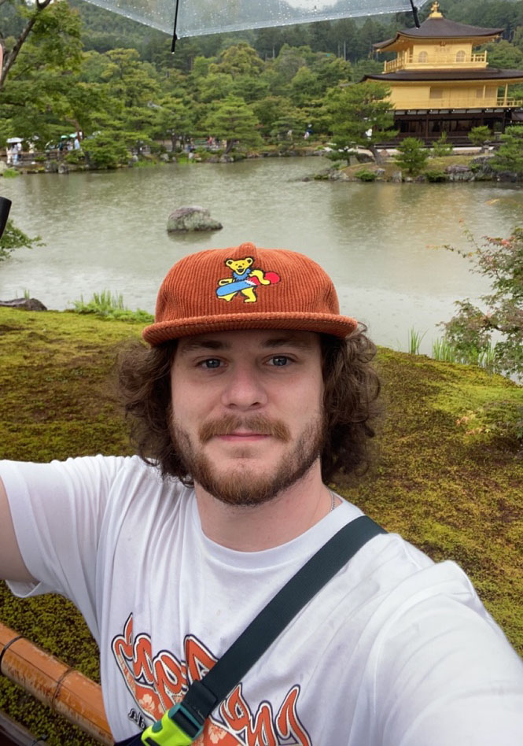

Home

My name is Milo Zurn-Galinsky. I am a senior studying at Boston University graduating with a Bachelors in Computer Science. I am eager to use my strong academic background to gain further hands-on experience in the field. I have a strong work ethic and problem solving skills. I wish to pursue opportunities where I can continuously learn and make a meaningful impact.
Please explore my online resume if you are interested in learning more about me.